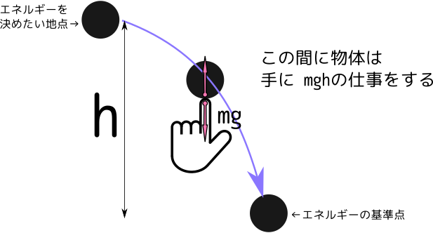

さて、仕事とエネルギーの関係を振り返っておこう。

ポテンシャルエネルギーを決めるには、図のようにまず「エネルギーの基準点」（ポテンシャルエネルギーが0の点）を決め、「エネルギーを求めたい状態」から定めた基準点まで物体を移動させた時、物体のする仕事を求める。物体のエネルギーはした仕事の分だけ減るというエネルギーの定義から、この時
（物体のする仕事）＝（最初の場所で持っていたエネルギー）ー（基準点のエネルギー）
となる。基準点のエネルギーを0と置くから、（物体のする仕事）は（最初の場所で持っていたエネルギー）そのものになる。
熱力学的対象に対して力学の場合と同じように「した仕事の分エネルギーが減る」ということからエネルギーを求めたい。
我々はブラックボックスの中身を知らなくても、そのブラックボックスを押したり引いたりして仕事をすることで、そのブラックボックスの持つエネルギーを計算することができる。まず（ブラックボックスと言いつつ）よく知っている「フックの法則に従うバネ」の場合で仕事を計算してみる。
大事なのは「ある場所$x$でブラックボックス（実はバネ）の出す力は$-kx$である」ということで、これだけ知っていればブラックボックスのする仕事を
$\overbrace{\int_a^b (-kx) \mathrm dx}^{バネがした仕事} = \left[-{1\over2}kx^2\right]_a^b=\overbrace{{1\over2}ka^2}^{最初のエネルギー}-\overbrace{{1\over2}kb^2}^{最後のエネルギー}$
と計算できる（$-kx$にマイナスがついているのは$x$軸負方向の力だから）。
この仕事はマイナスであるが、その結果として、ブラックボックス（バネ）のエネルギーが${1\over2}ka^2$から${1\over2}kb^2$へと「増えた」と考えられる。つまりバネのエネルギーが${1\over2}kx^2$であることがわかる。
次にブラックボックスの中にあるのが「等温環境に置かれた理想気体」だとしてみよう。
この時気体のする仕事は
$\int_{V_1}^{V_2} P\mathrm dV$
である。理想気体だとすれば$P={nRT\over V}$であり、等温準静操作だとすれば$T$は定数だから$nRT$を積分の外に出して、
$\overbrace{\int_{V_1}^{V_2} P\mathrm dV}^{気体のした仕事}=nRT\int_{V_1}^{V_2}{\mathrm dV\over V}=nRT\left[\log V\right]_{V_1}^{V_2}=\overbrace{-nRT\log V_1}^{最初のエネルギー} -\overbrace{(- nRT \log V_2)}^{最後のエネルギー}$
となる。$V_1>V_2$だからこれは負の量である（気体は仕事をされているからこれでよい）。
この式から気体の持つエネルギーのようなものは$-nRT\log V_1$から$-nRT\log V_2$へと減った、と解釈できる。
ここで「のようなもの」をつけた理由は二つある。
一つは「準静的」を仮定したこと（具体的には、$nRT$を「定数」として積分の外に出したところでこの仮定を使った）。よって実際にされる仕事はこれより小さい。
もう１つは、これは確かに「気体のした仕事」であるが、エネルギーは気体だけが供給していると考えるのはおかしい。等温操作だから気体と環境の間に「熱」という形でエネルギーの移動があるから、ここで変化しているのは「気体＋環境」のエネルギーだと解釈しなくてはいけない。
温度計→（低温）（高温）
理想気体に対する$W_{\rm max}$は $$ W_{\rm max}(V_0\to V)=-NRT\left[\log V\right]_{V_0}^V=-NRT \log\left({V\over V_0}\right) $$ と求められる（$V$に依存しない部分は後で考えよう）。
グラフで表現すると、
のように描ける。
力学的エネルギーを決めるとき「基準点」を考えて「その基準点に持っていくまでにできる仕事」でエネルギーを決めた。同様に、「等温操作をしつつある基準点まで変化させるときの最大仕事」で「ヘルムホルツの自由エネルギー」を定義する。
$F[T;V]=W_{\rm max}(T;V\to V_0(T))$
である。ただしこのエネルギーの基準点$V_0(T)$は温度によって変わっていい（まだ基準点は決めない。６章で決める）。
よってヘルムホルツ自由エネルギーは、基準点からエネルギーを求めたい場所までの$P$-$V$グラフの面積（右側ではマイナスにして計算する）で表されることになる（上の図参照）。
さらに、$W_{\rm max}(V\to V+\Delta V)=P\Delta V$と書けるから、 $$ \left({\partial F(T;V,N)\over\partial V}\right)_{T,N}=-p(T,V,N) $$ （$p(T,V,N)$は圧力）がわかる。
理想気体に対して計算すると、$p={NRT\over V}$を代入して、
$\left({\partial F(T;V,N)\over\partial V}\right)_{T,N}=-{NRT\over V}$を積分して、 $$ F(T;V,N)=-NRT\log V+(Vに依らない部分) $$ となる。$V$に依らない部分は、基準点の決め方で決まるが、その基準点$V_0$は温度により違う値を取ってもよい。
なぜ「基準点は温度によって変わっていい」ということになるかというと、ここでは「等温操作」でヘルムホルツの自由エネルギーを定義していて、まだ「温度が変わると$F$がどう変わるか」は何にもわからないのである。ここまでで理解しておくべきことは、温度を１つ決めた時に「最大仕事」を使って$F$が定義（計算）できるということだけである。
ヘルムホルツの自由エネルギーは、エネルギーが持っているべき条件を満たしている。具体的には、示量的であることと、独立な二つの、示量変数が$V_1,N_1$の系１と示量変数が$V_2,N_2$の系２がそれぞれ$F_1(T;V_1,N_1),F_2(T;V_2,N_2)$のヘルムホルツの自由エネルギーを持っていたら、合成系のヘルムホルツの自由エネルギーは$F_1(T;V_1,N_2)+F_2(T;V_2,N_2)$になる。
ただし、この定義では「一定温度$T$」の場合しか述べてないので、温度が変わったとき（というのは「環境の温度を変えて操作をやり直したとき」という意味）にヘルムホルツの自由エネルギーがどう変わるかについては何も述べてないことに注意（もちろん、変わる）。